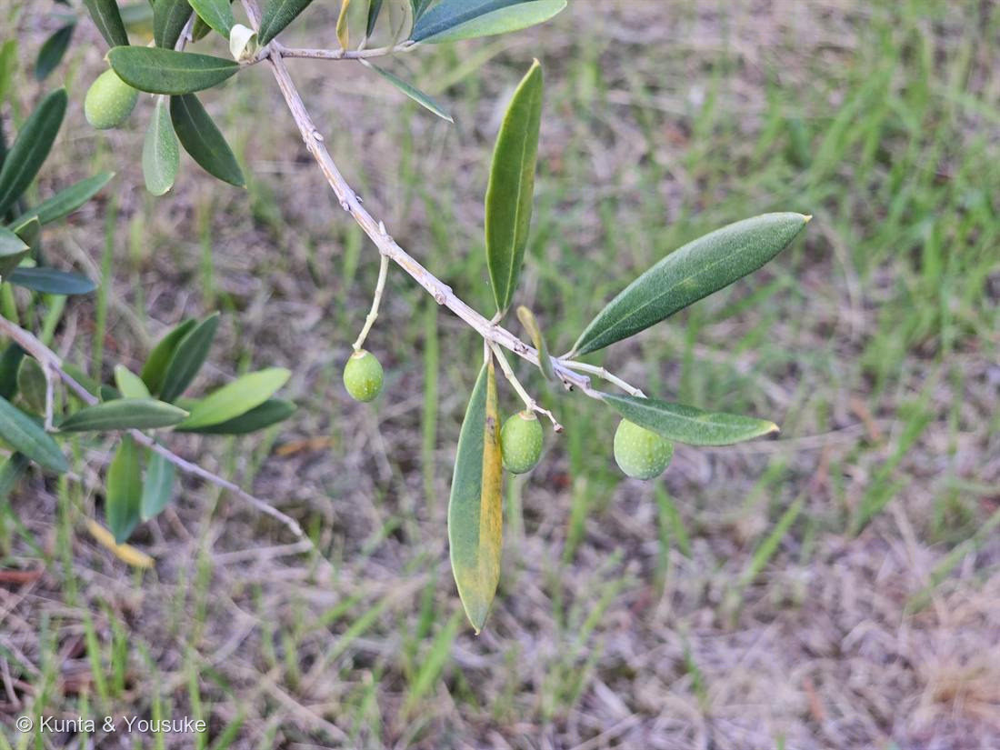

地図を読み込んでいるよ…
🔍 写真も地図も、押しているあいだ拡大して見られるよ（スマホは指を置いてすこし待ってね）。
🌍 の地図＝この子がもともと自生している場所を緑に。地中海沿岸〜西アジア。
⚠ 地図は国（日本と中国だけ県・省）までしか塗れないから、ほんとうの分布より広く見えていることがあるよ。地図はだいたいの場所。正確なところは、上の文を見てね。
オリーブ
Olea europaea L.
別名 · オリブ／橄欖（かんらん・慣用） ／ 品種は写真では特定不可
モクセイ科 · Oleaceae（オリーブ属）── この図鑑で初めての科
燻太さんの気づき「近所の一軒家のお庭の子。家で使うオイル漬けの色が二種類あるのも気になる」……その台所の「二色」が、図鑑の色の小道と、スイフヨウにつながった。
名前と学名の由来 ── Olea＝オリーブ＝「油」の語源
- ⭐属名 Olea は、ラテン語で「オリーブ（の木・油）」（ギリシャ語 elaia から）＝英語の oil（油）の語源にもつながる。種小名 europaea は「ヨーロッパの」。
見分けたところ ── 銀色の葉裏
- 葉が対生・全縁・革質の細い披針形。表は濃い緑、裏は銀白色（写真でめくれた葉が白っぽく見える）。
- あの銀色は盾状毛（うろこ状の毛）が葉裏をびっしり覆っているから＝乾いた地中海の強い日ざしを照り返し、水の蒸発を抑える、乾燥への適応。
- 緑色の楕円形の実＝核果（中に固い核）。熟すと黒紫になる。
- Olea＝ラテン語で「オリーブ／油」。もとはギリシャ語 elaia で、そこから英語 oil・ラテン語 oleum（油）が生まれた＝「油」という言葉そのもののご先祖の名前。
⭐ 燻太さんの気づき① 「オイル漬けの色が二種類」── 色の物語
- 緑と黒は、基本は同じ実の“熟し方のちがい”。緑＝若い実、黒紫＝完熟。写真の緑の実も、木で熟せば黒紫になる。
- ⭐木で熟した黒＝アントシアニン（果皮にたまる色素）＝023 ブルーベリー・015 ホーリーバジルの葉裏・039 スイフヨウと同じ色素の一族。
- ⭐⭐緑→黒は、クロロフィルが分解して、アントシアニンがたまっていく変化。——039 スイフヨウの花で見た「色素がたまって 白→紅」が、オリーブでは“実”で起きている。
- ⚠でも、缶詰の「黒オリーブ」の多くは“作られた黒”：緑の実をアルカリ液に漬けて空気を吹き込み、苦味のオレウロペインを酸化させて黒くし、グルコン酸鉄（Fe²⁺）で色を固定したもの（カリフォルニア式）。木で熟した本物の黒（しわが寄る）とは別物。
⭐ 燻太さんの気づき② 「生では食べられない」── オレウロペインの苦味
- 生のオリーブは苦くて渋くて、そのままでは食べられない。正体はオレウロペイン（セコイリドイド配糖体）。
- 塩水に長く漬けたり、アルカリで抜いたり、水にさらしたりしてアクを抜く＝「塩漬け・オイル漬け」は、この苦味抜きの結果。⚠だからお庭の生の実はかじらない。
- ⭐⭐この苦味は、040 ハナハマセンブリ（リンドウ科）の苦味と“同じ一族”＝どちらもセコイリドイド。しかも収れん（他人の空似）ではなく、ほんとうの化学の血縁（モクセイ科もリンドウ科も、セコイリドイドを作る大きな系統の仲間）。
⭐⭐ 油を「種」でなく「果肉」にためる
⭐⭐⭐ 花のしくみ ── 「見えない2つの型」で自家受粉を拒む
- オリーブの花は5〜6月、小さな白い花（花冠が4つに裂ける）が房になって咲く。とても地味。
- ⭐風媒花＝花で虫を呼ばない。風に花粉をまかせる。だから花びらは小さく地味で、蜜も香りもほとんどなく、そのかわり大量の花粉を風に飛ばす（地中海では花粉症の原因になるほど）。→ 🦋「だれを呼ぶための花か」の小道で、ただひとりの“例外”＝だれにも向かって咲かない、風にまかせた花。
- ⭐⭐自家不和合性＝自分の花粉では実がなりにくい。しかもオリーブのしくみは「型が2つしかない」自家不和合性（diallelic SI・G1/G2）。同じ型どうしは実らず、ちがう型どうしでだけ実る。同じモクセイ科の Phillyrea・Fraxinus ornus（トネリコの仲間）と共通のしくみ（Saumitou-Laprade 2017）。
- ⭐⭐⭐044 ペンタスと、ちょうど対：ペンタスの異形花柱性も「2つの型で自家受粉を拒む」仕組みだった。でも——ペンタスは“目で見える2型”（pin と thrum＝花の形がちがう）／オリーブは“見えない2型”（花はどれも同じ姿で、ちがいは分子の中だけ）。「体で自家受粉を拒む」同じ答えの、見える版と見えない版。
- ⚠だから、お庭に1本だけだと実つきが悪いことがある（相性のいい別の型＝受粉樹が近くにあるとよく実る）。写真の子はちゃんと実がなっている＝近くに相方の木がいるのか、自家和合ぎみの品種なのかも（※どの品種が本当に自家和合かは研究でまだ議論中）。
昔からの暮らし・文化
- 地中海文明の木。女神アテナが人々に贈った木（知恵と平和）、オリンピックの勝者の冠、ノアの箱舟の鳩がくわえて帰った枝＝平和のしるし（国連旗にもオリーブ）。
- 数百年〜千年生きる長寿の木。日本では小豆島（香川）が栽培の中心。
- ⚠生の実・葉はそのまま食べない（オレウロペインで苦い）。市販のオリーブ・オイルはすべて加工したもの。
参考：Kate Greenaway Language of Flowers(1884)・Project Gutenberg／花言葉-由来
花言葉
- 日本で
- 平和／知恵。
- 英語圏
- Olive — Peace.（平和）Greenaway 1884
なぜ、そうなったか：この子は、答えがすぐ上の「昔からの暮らし・文化」に、もう書いてある。
平和＝ノアの箱舟の鳩が、水がひいたしるしにオリーブの枝をくわえて帰ってきたから（旧約聖書・創世記）。国連の旗のオリーブも、ここから。
知恵＝女神アテナが人々にオリーブの木を贈ったから（ギリシャ神話）。だからあの都市はアテネという名になった。
花言葉って、思いつきでつけた飾りみたいに見えるけど、この子のは三千年ぶんの話が、二語に畳まれたものなんだね。
参考：Kate Greenaway Language of Flowers(1884)・Project Gutenberg／花言葉-由来